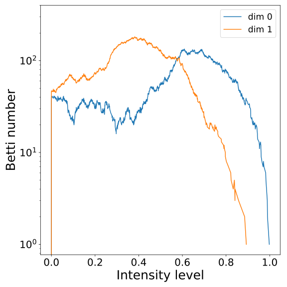
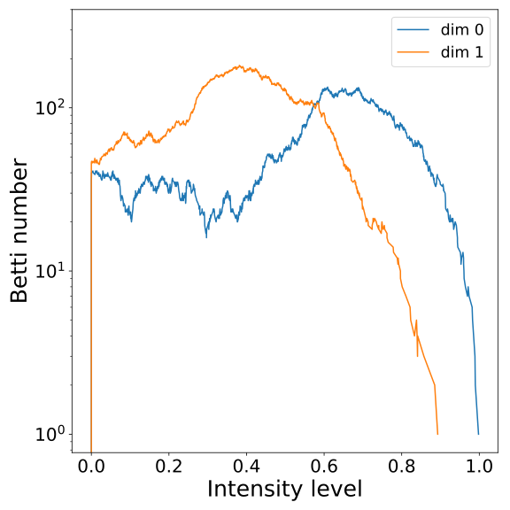

9th European Congress of Mathematics Sevilla 2024
APPLIED AND COMBINATORIAL TOPOLOGY
Let it Be(tti):
TOPOLOGICAL FINGERPRINTS FOR AUDIO IDENTIFICATION
XIMENA FERNANDEZ
University of Oxford
Joint work with
W. REISE (Paris-Saclay), M. DOMINGUEZ (Spotify), M. BEGUERISSE-DIAZ (Spotify) & H. HARRINGTON (Oxford).
The problem
Do you recognize these songs?
Source: Spotify
Source: Music Obfuscator by Ben Grosser (2015)
$~$
Given two audio recordings, identify wheather they correspond to the same audio content .
Audio representation
Audio representation
- Waveform: A continuous function $s\colon\lbrack 0,T\rbrack \to \mathbb{R}$.

Audio representation
- Waveform: A continuous function $s\colon\lbrack 0,T\rbrack \to \mathbb{R}$.

Audio representation
-
(Discrete) Short-time Fourier transform: Given equally-spaced time samples of the signal $(s_n)_{n=1}^{N}$ in $\lbrack 0,T\rbrack$ and a discretization of the frequency range $\{f_m\}_{m=1}^M$, the magnitude of the frequency $f_m$
around $t_n$
is given by
\[
\widehat{S} (n,
m) = \sum_{k=-\infty}^\infty s_k \omega_{k-n}\exp\left(-i k f_m\right),
\]
where $(\omega_k)_k$ is a discrete version of a window function.


Fingerprinting audio tracks
Fingerprinting audio tracks
Case study:
 Shazam (2003)
Shazam (2003)

Fingerprinting audio tracks
Case study:
 Shazam (2003)
Shazam (2003)
- Finding peaks: Identify local maxima in the spectrogram.
For every $n,m$, compare $\widehat{S}(n,m)$ with the average of intensities in a neighborhood $\mathcal{N}(n,m)$.
Identify $(n,m)$ such that $ \widehat{S}(n,m)>\sum_{(n',m')\in \mathcal{N}(n,m)} \widehat{S}(n',m')$.


Fingerprinting audio tracks
Case study:
 Shazam (2003)
Shazam (2003)
- Fingerprint: For every peak (anchor point) $P$ at time $t_P$ and every peak $Q$ in the target zone at time $t_Q$ compute $(f_P, f_Q, t_Q-t_P)$.
Comparing audio tracks
Case study:
 Shazam (2003)
Shazam (2003)
- Matching: Given two tracks, match pairs of hashes that coindide.

Comparing audio tracks
Case study:
 Shazam (2003)
Shazam (2003)
- Scoring: Compute the histogram of time difference for every matched pair of hashes. The score of a matching is the size of the largest bar.


Obfuscations of Audio tracks
- Original track
- Addition of noise
- Reverberation
- Low/High pass filter
- Tempo shift
- Pitch shift
Obfuscations of Audio tracks


Audio Identification
Case study:
 Shazam
Shazam
- The algorithm has good performance for rigid obfuscations of audio tracks, such as:
- addition of noise,
- highpass/lowpass filter,
- reverberation.
-
The algorithm has poor performance for topological obfuscations of audio tracks, such as:
- change of pitch,
- change of tempo,
- mixed distortions; e.g. Music Obfuscator by Ben Grosser (2015).
Topological
Audio Identification
Topology of spectrograms


Topology of spectrograms
Mel-spectrograms as filtered cubical complexesTopology of spectrograms
Mel-spectrograms as filtered cubical complexes
Topological fingerprints
Topological fingerprints
Let $\mathcal S$ denote the mel-spectrogram of an audio track $s:[0,T]\to \mathbb{R}$.

- Local spectral decompositions: Given $\omega$ a window size and $0<\tau<1$ an overlap constant, we subdivide $\mathcal S$ into a set of $\tau$-overlapping windows $W_0, W_1, \dots, W_k$ of $\omega$ seconds duration. We normalize the range of every window as $\frac{W_i-\min(W_i)}{\max(W_i)-\min(W_i)}.$ Let $t_i$ be the mid-time point of $W_i$.


Topological fingerprints
Let $\mathcal S$ denote the mel-spectrogram of an audio track $s:[0,T]\to \mathbb{R}$.
- Local persistence signatures: For each (normalized) window $W_i$, we compute the persistent homology of the associated upper-filtered cubical complex for dimensions 0 and 1.
We encode the persistent barcodes as a family of Betti curves $\{\beta_{i,0}\}_{i=0}^{k}$ and $\{\beta_{i,1}\}_{i=0}^{k}$ for dimensions 0 and 1, respectively.

 



Topological fingerprints
Let $\mathcal S$ denote the mel-spectrogram of an audio track $s:[0,T]\to \mathbb{R}$.
- Fingerprint: The topological fingerprint of the audio track $s$ with the resolution given by the parameters $\omega$ and $\tau$ is defined as the set of triples ${(t_i, \beta_{i,0}, \beta_{i,1})}_{i=0}^{k}$.
$~~~~~~~~~~~~t_0~~~~~~~~~~~~~~~~~~~~~~~t_1~~~~~~~~~~~~~~~~~~~~t_2~~~~~~~~~~~~~~~~~~~~~t_3~~~~~~~~~~~~~~~~~~~~~~t_4~~~~~~~~~~~~~~~~~~~~~t_5 \dots$
Comparing fingerprints
Comparing fingerprints
- Distance: Let $s$, $s'$ be two audio tracks and let ${(t_i, \beta_{i,0}, \beta_{i,1})}_{i=0}^{k}, {(t_j', \beta'_{j,0}, \beta'_{j,1})}_{j=0}^{k'}$ be its associated fingerprints.


$~~~~$


$~~~~~~~~~~~~~~~~t_0~~~~~~~~~~~~~~~~t_1~~~~~~~~~~~~~~~~t_2~~~~~~~~~~~~~~~t_3~~~~~~~~~~~~~~~t_4~~\dots~~~~~~~~~~~~~~~~~~t'_0~~~~~~~~~~~~~~~~t'_1~~~~~~~~~~~~~~~~t'_2~~~~~~~~~~~~~~~~t'_3~~~~~~~~~~~~~~~t'_4~~\dots$
Comparing fingerprints
- Distance: Let $s$, $s'$ be two audio tracks and let ${(t_i, \beta_{i,0}, \beta_{i,1})}_{i=0}^{k}, {(t_j', \beta'_{j,0}, \beta'_{j,1})}_{j=0}^{k'}$ be its associated fingerprints.
For every homological dimension $d=0,1$, the $d$-Betti distance matrix $M_d$ between $s$ and $s'$ is defined as \[ (M_d)_{i,j} = \Vert \beta_{i,d} - \beta'_{j,d} \Vert_{L^1}. \]
We summarize the distance between every pair of windows $W_i$ and $W_j'$ as \[ C_{i,j} = \lambda (M_0)_{i,j} + (1-\lambda) (M_1)_{i,j} \] for a parameter $0\leq \lambda\leq 1$.

Comparing fingerprints
- Matching: We compare $s$ and $s'$ via a minimum-cost matching in $C$.
Comparing fingerprints
- Matching: We compare $s$ and $s'$ via a minimum-cost matching in $C$.
Comparing fingerprints
- Scoring: We quantify the degree of temporal-order preservation in the matching as follows. Suppose $k < k'$. Let $P = \{(t_{1}, t'_{j_1}), \dots, (t_{i}, t'_{j_k})\}$ be the set of mid-points of matched windows, with $t_1< t_2< \dots< t_k$.
Comparing fingerprints
- Scoring: We quantify the degree of temporal-order preservation in the matching as follows. Suppose $k < k'$. Let $P = \{(t_{1}, t'_{j_1}), \dots, (t_{i}, t'_{j_k})\}$ be the set of mid-points of matched windows, with $t_1< t_2< \dots< t_k$.
For $m\geq 1$, compute $\bar t'_{j_i} = \mathrm{median} \{t_{j_{i-m}},\dots, t_{j_{i-1}}, t_{j_i}, t_{j_{i+1}}, \dots, t_{j_{i+m}}\}$, the moving median at $t_{j_i}$. Consider $\bar P=\{( t_{i}, \bar t_{j_i}'): i =1,\dots,k\}$.
Comparing fingerprints
- Scoring: We quantify the degree of temporal-order preservation in the matching as follows. Suppose $k < k'$. Let $P = \{(t_{1}, t'_{j_1}), \dots, (t_{i}, t'_{j_k})\}$ be the set of mid-points of matched windows, with $t_1< t_2< \dots< t_k$.
For $m\geq 1$, compute $\bar t'_{j_i} = \mathrm{median} \{t_{j_{i-m}}, t_{j_{i-m+1}}, \dots, t_{j_{i-1}}, t_{j_i}\}$, the moving median at $t_{j_i}$. Consider $\bar P=\{( t_{i}, \bar t_{j_i}'): i =1,\dots,k\}$.
We assess the functional increasing dependency of the points in $P$ as \[ \rho_{\bar P} = \mathrm{Pearson}\{(t_i), (\bar{t}'_{j_i})\}. \]

Comparing fingerprints
- Scoring: We quantify the degree of temporal-order preservation in the matching as follows. Suppose $k < k'$. Let $P = \{(t_{1}, t'_{j_1}), \dots, (t_{i}, t'_{j_k})\}$ be the set of mid-points of matched windows, with $t_1< t_2< \dots< t_k$.
For $m\geq 1$, compute $\bar t'_{j_i} = \mathrm{median} \{t_{j_{i-m}}, t_{j_{i-m+1}}, \dots, t_{j_{i-1}}, t_{j_i}\}$, the moving median at $t_{j_i}$. Consider $\bar P=\{( t_{i}, \bar t_{j_i}'): i =1,\dots,k\}$.
We assess the functional increasing dependency of the points in $P$ as \[ \rho_{\bar P} = \mathrm{Pearson}\{(t_i), (\bar{t}'_{j_i})\}. \]
Experimental Results
Experimental Results
Music Obfuscator by Ben Grosser
| Song | Shazam (60 sec) |
|---|---|
| Smells Like Teen Spirit | No |
| Get Lucky | No |
| Giant Steps | No |
| Stairway to Heaven | Yes |
| Headlines | Yes |
| Blue in Green | No |
| You’re Gonna Leave | No |
| Blue Ocean Floor | No |
Experimental Results
Music Obfuscator by Ben Grosser
| Song | Shazam (60 sec) | Correlation (60-30 sec) |
|---|---|---|
| Smells Like Teen Spirit | No | 0.83208 |
| Get Lucky | No | 0.99906 |
| Giant Steps | No | 0.83904 |
| Stairway to Heaven | Yes | 0.88533 |
| Headlines | Yes | 0.91173 |
| Blue in Green | No | 0.89276 |
| You’re Gonna Leave | No | 0.71766 |
| Blue Ocean Floor | Yes | 0.51332 |
Experimental Results
Spotify Database + PySOX Transformer
-
 Spotify Web API. Dataset of 30 seconds preview snippets of (~135.000) songs.
Spotify Web API. Dataset of 30 seconds preview snippets of (~135.000) songs. - PySOX Transformer. Every audio track has been then manipulated according to seven types of obfuscations in a range of different degrees of magnitude.
- Positive and negative pairs. For every obfuscation type and degree, we generated a random set of 1000 positive pairs (36000 in total). We also generated a random set of 36000 negative pairs.
| Obfuscation type | Degree |
|---|---|
| Low Pass Filter | 200, 400, 800, 1600, 2000 |
| High Pass Filter | 50, 100, 200, 400, 800, 1200 |
| White Noise | 0.05, 0.10, 1.20, 0.40 |
| Pink Noise | 0.05, 0.10, 1.20, 0.40 |
| Reverberation | 25, 50, 75, 100 |
| Tempo | 0.50, 0.80, 1.1 1.2, 1.50, 2.00 |
| Pitch | -8, -4, -2, -1, 1, 2, 4, 8 |
Experimental Results
(Accuracy)


Future work
the 1 vs N problem
Given an audio track $s$ and a database $\mathcal D$, identify an element $s'\in \mathcal D$ with the same audio content as $s$.
Future work
the 1 vs N problem
Given an audio track $s$ and a database $\mathcal D$, identify an element $s'\in \mathcal D$ with the same audio content as $s$.
- The search algorithm involves the comparison of the sample fingerprint with the (already computed) database fingerprints.
Future work
the 1 vs N problem
Given an audio track $s$ and a database $\mathcal D$, identify an element $s'\in \mathcal D$ with the same audio content as $s$.
- The search algorithm involves the comparison of the sample fingerprint with the (already computed) database fingerprints.
-
Some ideas to generalize the 1 vs 1 algorithm to the 1 vs N problem:
- Clustering of the database by content.
- Subdivide every audio track from the database in blocks of $T$ seconds (e.g. 60 sec).
References
-
W. Reise, X. Fernandez, M. Dominguez, H.A. Harrington, M. Beguerisse-Diaz.
Topological fingerprints for audio identification
SIAM Journal on Mathematics of Data Science (2024, to appear).